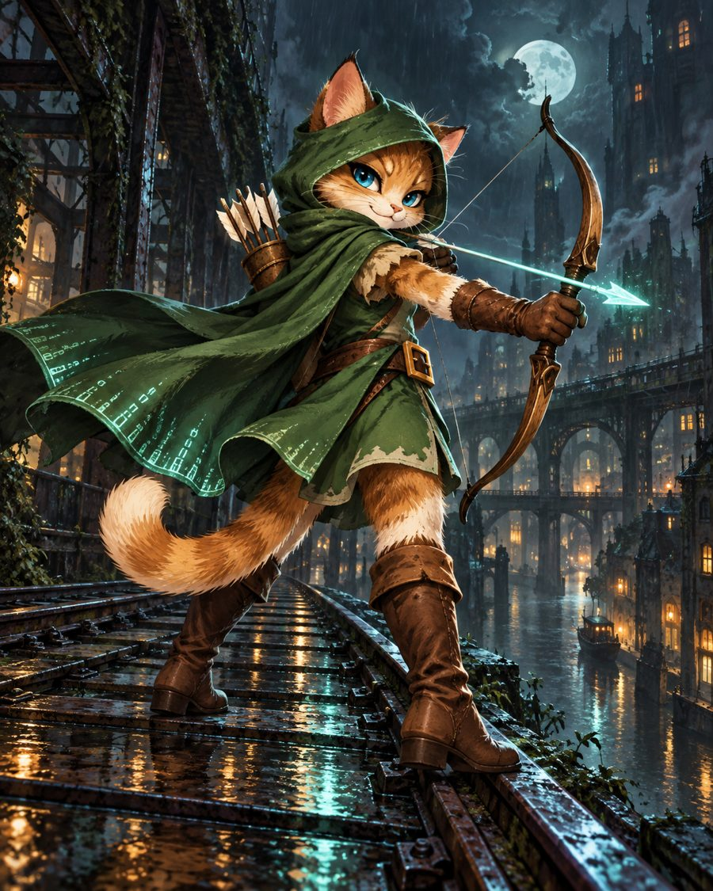

Whitepaper v2.3Summary27 September 2026
Galaxy King Dog
Robin's arcade: a cat archer, cyberpunk alien hounds and a city worth fighting for. The free game comes first. Separate Web3 editions add verifiable runs, chain-specific game pools, achievement rewards, charity funding and a community treasury.
Robinhood Chain is the first integration; Solana follows with separate accounting. Mainnet has not launched.

1. The game
Galaxy King Dog is a fast arcade shooter for keyboard and touch. Robin defends the city from waves of alien hounds that follow a command signal; the story unfolds through wave-linked objectives and boss fights. A boss fight starts with a random weapon gift. That gift is a gameplay pickup, not a token or an NFT.
Robin's costumes are free cosmetic skins. They carry no financial value and grant no reward.
2. Web3 editions: verified play
- Paid entry. An entry is paid in the chain's native currency and held in escrow until the first successful start. A retry reuses the same entry and never charges again. An unused entry can be refunded after it expires.
- Verified runs. Before any reward, an independent verifier replays the run with the same game engine and inputs. Only verified results count.
- Fees. Fees are fixed when a deployment is sealed. Mainnet pricing still needs final approval.
3. Where each entry goes
Allocation happens once, at the first successful start, from the gross entry payment on that chain.
| Share | Destination |
|---|---|
| 5% | SOL reserve |
| 5% | HOOD reserve (tokenized Robinhood Markets exposure) |
| 10% | Eight-asset stock & commodity basket (section 5) |
| 80% | Game pool, rewards, creator and charity (section 4) |
Each chain keeps its own revenue, liabilities and treasury. Robinhood Chain and Solana funds are never pooled or spent across chains.
4. Game pool, creator and charity
The game pool is contract accounting, not a trading liquidity pool. It pays out at these checkpoints:
| Checkpoint | Split of the eligible pool |
|---|---|
| Ordinary season end (seasons 1–31) | 70% retained · 20% champion · 10% creator & charity |
| Every new world record | 70% retained · 20% record breaker · 10% creator & charity |
| Human season (32) | 30% carried to Chaos · 40% human champion · 30% creator & charity |
| Chaos season (33) | 67% Chaos champion · 33% creator & charity |
Each creator-and-charity share splits 49% creator / 51% charity. A fifth of the charity part is recycled into the game pool.
Holders advise on charity recipients through a 99-day ballot, weighted by farmed tokens they hold. The project administrator then selects the recipient and publishes the reason. Charity decisions and treasury governance are separate systems.
5. Community treasury
The treasury acquires assets for the community; it does not buy meme tokens or burn anything. Basket funds accumulate per chain. When the whole basket reaches about $50, one basket cycle may run. The $50 is a total for the basket, not $50 per asset.
Every asset keeps its own allocation. If an asset cannot be bought safely, its share waits. It is never substituted or redistributed.
The eight exposures and their planned routes
| Exposure | Planned route |
|---|---|
| SpaceX | Directly on Robinhood Chain |
| Cerebras Systems | Directly on Robinhood Chain |
| Intel | Directly on Robinhood Chain |
| Silver | Directly on Robinhood Chain, through a silver ETF token |
| Robinhood Markets (HOOD) | Bridge to Ethereum |
| Beam Therapeutics | Bridge to Ethereum |
| X-energy | Bridge to Ethereum |
| STMicroelectronics | Bridge to Ethereum |
Buying on Robinhood Chain itself takes minutes and needs no bridge. Bridged purchases take hours, because every step waits for final confirmation.
Before mainnet, each route must be verified for:
- the exact instrument;
- liquidity;
- eligibility;
- custody.
Final weights are still to be approved. Tokenized exposure does not grant ordinary shareholder rights.
6. Testnet progress
- 7 of 8 legs were dispatched.
- 6 test purchases completed end to end: bridge, purchase, delivery confirmation and settlement.
- One planned failure (Intel) returned its full principal through the refund path.
- Silver was deliberately held back, and its allocation was kept.
- The cycle closed with zero outstanding principal.
The treasury engine is designed to be safe under restarts and network trouble:
- Every step waits for final confirmation.
- Every transaction is recorded durably before it is sent, so a restart never creates a duplicate purchase.
- Transactions that got stuck were recovered without losing funds.
- Unavailable purchases keep their allocation.
The code went through independent reviews and hundreds of automated tests.
Earlier testnet work covered paid entries, verified replays, test-token rewards, milestone NFTs and automatic delivery.
Test tokens, NFTs and test ETH have no value and do not convert to mainnet balances.
7. $420POP token
- One project supply cap of 2,100,300,000 $420POP (9 decimals). Human seasons 1–32 total 2,100,000,000; Chaos season 33 adds at most 300,000.
- Rewards are minted only for verified qualifying runs, within each season's cap. The score targets rise as a season approaches its cap.
- Mainnet starts with fresh seasons. No second independent supply exists on another chain.
8. Milestone NFTs
Five milestone NFTs, each issued to its original achiever:
- First Player
- Season Champion
- Record Breaker
- Human Champion
- Chaos Champion
The same milestone cannot be issued twice. No market value is promised. Mainnet NFT artwork will use durable, dedicated hosting.
9. Security and trust
The administrator can pause and resume the game, replace the verifier and decide charity recipients. The administrator cannot withdraw the game pool, and ownership cannot be renounced by accident. The project does not claim to be ownerless; these powers are a disclosed trust boundary.
Signing keys stay on protected, owner-controlled systems. An independent security review is required before mainnet.
10. Road to mainnet
- Perfect the testnet.
- A second consecutive basket cycle.
- A rehearsal of the hybrid design: direct Robinhood Chain purchases plus bridged purchases.
- Durable NFT hosting.
- Verify real routes.
- Exact instruments, liquidity, eligibility and custody for every asset.
- Final basket weights.
- Governance and custody.
- Verified control of the creator and treasury wallets.
- Enforceable rules for releasing treasury funds.
- Solana integration, with its own addresses and accounting.
- An independent security review of the contracts, verifier and dependencies.
- A separately approved migration, with exact, sealed launch parameters.
Mainnet stays disabled until every step has passed.